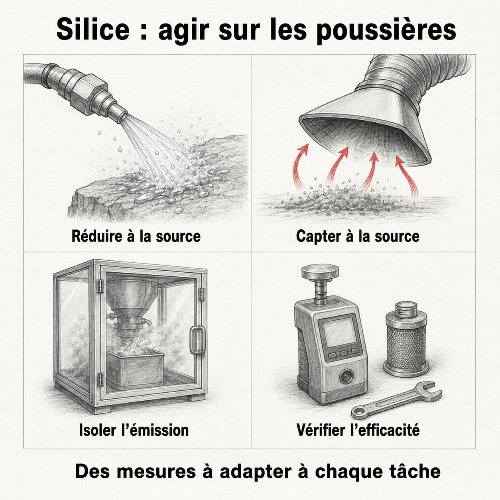

Programme de prévention silice cristalline
Le forage et le concassage peuvent générer des poussières contenant de la silice cristalline. La prévention demande d'identifier les tâches exposantes et d'adapter les mesures au procédé, à l'équipement et aux conditions du site.
Pourquoi en parler
La CNESST demande de réduire les émissions à la source et de prévoir une protection respiratoire appropriée lorsqu'elle est requise. Les règles applicables distinguent notamment les établissements et les chantiers de construction. CNESST — Silice cristalline.
Options à examiner avec l'équipe du site
{kind=link}

Toucher l'image pour l'agrandirRéduire les émissions, capter ou confiner les poussières demande des moyens adaptés à la tâche, parfois combinés. Leur efficacité doit être vérifiée ; une protection respiratoire appropriée peut rester requise.
Lire la version texte — mesures et suivi
| Levier | Points à examiner |
|---|---|
| Procédé humide | Compatibilité avec la tâche, alimentation en eau et entretien |
| Captage à la source | Emplacement du captage, fonctionnement et maintenance |
| Confinement ou isolation | Points d'émission et personnes restant exposées |
| Ventilation locale | Contribution à la maîtrise des poussières |
| Nettoyage | Méthode adaptée évitant la remise en suspension |
| Protection respiratoire | Choix de l'appareil dans un programme adapté aux expositions |
Vérifier l’efficacité : évaluer les expositions et le fonctionnement des mesures, puis inspecter et entretenir les équipements. Les dispositifs illustrés ne sont ni des plans d’installation ni une garantie de protection.
Source des repères : CNESST — Silice cristalline. Vérifiée le 6 septembre 2026 pour cette section uniquement.
La performance d'une mesure doit être vérifiée sur le terrain. Aucun pourcentage de réduction ne peut être déduit de ce tableau. L'entretien des dispositifs et la formation font partie du suivi des mesures. CNESST — Mesures de prévention de la silice, guide destiné aux chantiers de construction. Les exigences particulières de ce guide ne sont pas transposables automatiquement à toute activité minière.
Indicateurs de gestion proposés
- Tâches exposantes recensées et évaluations à jour.
- Fonctionnement et entretien des équipements de contrôle des poussières.
- Mesures correctives réalisées et efficacité vérifiée.
- Formation des personnes concernées et disponibilité des équipements prévus.
Les objectifs et fréquences de suivi sont à définir dans le programme du site.
Limites à faire valider
| Sujet | Validation requise |
|---|---|
| Valeurs d'exposition et règles applicables | Identifier la substance, le contexte et la référence réglementaire en vigueur |
| Choix d'un appareil respiratoire | Faire déterminer les exigences selon l'exposition et le programme de protection respiratoire |
| Surveillance de santé | Faire préciser le suivi applicable par les professionnels de santé au travail |
| Conservation des renseignements | Définir les documents, responsabilités, accès et durées applicables |
| Réclamation pour maladie professionnelle | Examiner les conditions du dossier ; aucune indemnisation automatique n'est présumée ici |
Les valeurs limites, examens périodiques, durées de conservation et choix d'APR ne sont pas fixés par cette fiche. Leur validation par l'hygiéniste, l'équipe de santé au travail et, si nécessaire, un conseiller juridique reste requise.